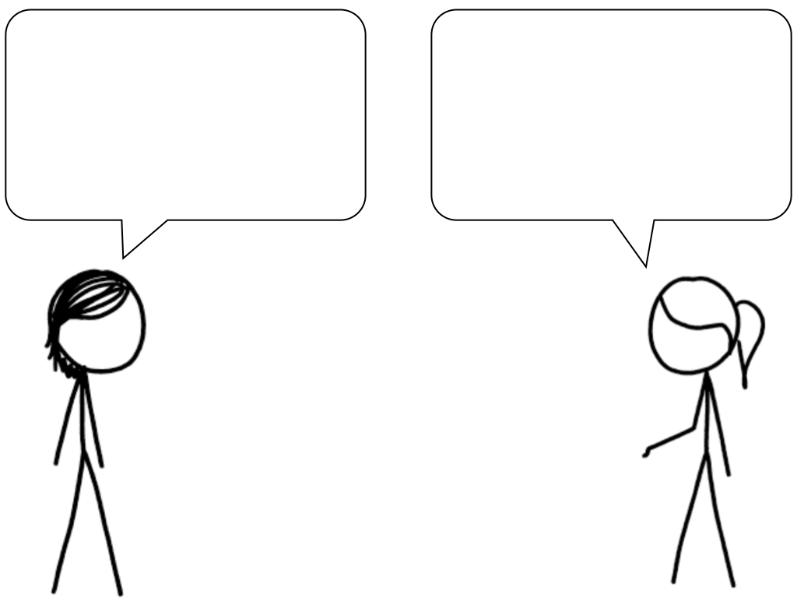

<!DOCTYPE html>
<html>
  <head>
    <title>Experiment</title>
      <script src="jspsych/jspsych.js"></script>
      <script src="jspsych/plugin-html-button-response.js"></script>
      <script src="jspsych/plugin-html-keyboard-response.js"></script>
      <script src="jspsych/plugin-html-slider-response-LH.js"></script>
      <script src="jspsych/plugin-fullscreen.js"></script>
      <script src="jspsych/plugin-survey.js"></script>
      <!-- --- -->
      <link href="jspsych/jspsych.css" rel="stylesheet" type="text/css" />
      <link href="experiment.css" rel="stylesheet" type="text/css" />
  </head>
  <body>
  </body>
  <script>

    /* general / init: */
      // this function shuffles an array
      function shuffle(array) {
        for (var i = array.length - 1; i > 0; i--) { 
          // Generate random number 
          var j = Math.floor(Math.random() * (i + 1));
          var temp = array[i];
          array[i] = array[j];
          array[j] = temp;
        }
        return array;
      }

      // function for sending data to store script
      function saveData(data){
        var xhr = new XMLHttpRequest();
        xhr.open('POST', '/store');
        xhr.setRequestHeader('Content-Type', 'application/json');
        xhr.send(data);
        // xhr.send(JSON.stringify({filedata: data}));
      }

      /* Send data data to store script: */
      async function saveData(data){
          const response = fetch('/store', {
              method:  "POST",
              cache:   "no-cache",
              headers: {"Content-Type": "text/csv"},
              body:    data
          })
          document.getElementById("jspsych-content").innerHTML = await response.text();
      }
      
      // initialise jspsych 
      var jsPsych = initJsPsych({
        show_progress_bar: true,
        auto_update_progress_bar: false,
        on_finish: function(){
          saveData(jsPsych.data.get().csv());
          window.location = "https://app.prolific.co/submissions/complete?cc=CEPWIL3L"
        }
      });

      /* for the progress bar: create a global count variable that increases by 1 after each trial, and use that to set the progress bar value at the end of each trial */
      var count = 0;
      var n_trials = 20; // 15 trials, 4 instructions, 1 demographics

    /* define the ingredients for the target stimuli */

      // list of all materials
      var materials = { 1: { context: "Two colleagues are talking about what happened at the company Christmas party.",
          whynot: "Yeah, and it's pretty clear why not.",
          neither: "Yeah, and neither did the caterer.",
          noteven: "Yeah, not even with the catering.",
          think: "I think that the party planning committee made an effort this year.",
          wrong: "You're wrong that the party planning committee made an effort this year.",
          doubt: "I heavily doubt that the party planning committee made an effort this year.",
          lie: "It's a lie that the party planning committee made an effort this year.",
          rumor: "It's just a rumor that the party planning committee made an effort this year.",
          disagree: "I disagree that the party planning committee made an effort this year.",
          asif: "This party sucks. As if the party planning committee really made an effort this year.",
          like: "This party sucks. Like the party planning committee really made an effort this year.",
          notimpression: "I don't get the impression that the party planning committee made an effort this year.",
          notopinion: "It's not my opinion that the party planning committee made an effort this year.",
          notfeeling: "I don't get the feeling that the party planning committee made an effort this year.",
          notview: "It's not my view that the party planning committee made an effort this year.",
          notthink: "I don't think that the party planning committee made an effort this year.",
          notbelieve: "I don't believe that the party planning committee made an effort this year.",
          thinknot: "I think that the party planning committee didn't make an effort this year."},

        2: { context: "Two board members of an NGO are discussing how things went in their organization during the past month.",
          whynot: "Yeah, and I'm left wondering why not.",
          neither: "Yeah, and neither did the paid organizers.",
          noteven: "Yeah, not even simple scheduling tasks.",
          think: "I think that the volunteers performed many administrative tasks this month.",
          wrong: "You're wrong that the volunteers performed many administrative tasks this month.",
          doubt: "I heavily doubt that the volunteers performed many administrative tasks this month.",
          lie: "It's a lie that the volunteers performed many administrative tasks this month.",
          rumor: "It's just a rumor that the volunteers performed many administrative tasks this month.",
          disagree: "I disagree that the volunteers performed many administrative tasks this month.",
          asif: "All of our colleagues are lazy. As if the volunteers really performed many administrative tasks this month.",
          like: "All of our colleagues are lazy. Like the volunteers really performed many administrative tasks this month.",
          notimpression: "I don't get the impression that the volunteers performed many administrative tasks this month.",
          notopinion: "It's not my opinion that the volunteers performed many administrative tasks this month.",
          notfeeling: "I don't get the feeling that the volunteers performed many administrative tasks this month.",
          notview: "It's not my view that the volunteers performed many administrative tasks this month.",
          notthink: "I don't think that the volunteers performed many administrative tasks this month.",
          notbelieve: "I don't believe that the volunteers performed many administrative tasks this month.",
          thinknot: "I think that the volunteers didn't perform many administrative tasks this month."},

        3: { context: "Two journalists are discussing the results of the recent international climate summit.",
          whynot: "Yeah, and it's no mystery why not.",
          neither: "Yeah, and neither did the chair of the session.",
          noteven: "Yeah, not even in the face of imminent catastrophe.",
          think: "I think that the delegates narrowed down possible target dates in the final resolution.",
          wrong: "You're wrong that the delegates narrowed down possible target dates in the final resolution.",
          doubt: "I heavily doubt that the delegates narrowed down possible target dates in the final resolution.",
          lie: "It's a lie that the delegates narrowed down possible target dates in the final resolution.",
          rumor: "It's just a rumor that the delegates narrowed down possible target dates in the final resolution.",
          disagree: "I disagree that the delegates narrowed down possible target dates in the final resolution.",
          asif: "The member states were not willing to make concrete commitments. As if the delegates really narrowed down possible target dates in the final resolution.",
          like: "The member states were not willing to make concrete commitments. Like the delegates really narrowed down possible target dates in the final resolution.",
          notimpression: "I don't get the impression that the delegates narrowed down possible target dates in the final resolution.",
          notopinion: "It's not my opinion that the delegates narrowed down possible target dates in the final resolution.",
          notfeeling: "I don't get the feeling that the delegates narrowed down possible target dates in the final resolution.",
          notview: "It's not my view that the delegates narrowed down possible target dates in the final resolution.",
          notthink: "I don't think that the delegates narrowed down possible target dates in the final resolution.",
          notbelieve: "I don't believe that the delegates narrowed down possible target dates in the final resolution.",
          thinknot: "I think that the delegates didn't narrow down possible target dates in the final resolution."},

        4: { context: "Two union representatives are discussing some concerns that have been raised by the employees of a car factory.",
          whynot: "Yeah, and now management has to explain why not.",
          neither: "Yeah, and neither did the office workers.",
          noteven: "Yeah, not even their basic health insurance.",
          think: "I think that the warehouse crew received benefits in this period.",
          wrong: "You're wrong that the warehouse crew received benefits in this period.",
          doubt: "I heavily doubt that the warehouse crew received benefits in this period.",
          lie: "It's a lie that the warehouse crew received benefits in this period.",
          rumor: "It's just a rumor that the warehouse crew received benefits in this period.",
          disagree: "I disagree that the warehouse crew received benefits in this period.",
          asif: "The behavior of senior management is bordering on the illegal. As if the warehouse crew really received benefits in this period.",
          like: "The behavior of senior management is bordering on the illegal. Like the warehouse crew really received benefits in this period.",
          notimpression: "I don't get the impression that the warehouse crew received benefits in this period.",
          notopinion: "It's not my opinion that the warehouse crew received benefits in this period.",
          notfeeling: "I don't get the feeling that the warehouse crew received benefits in this period.",
          notview: "It's not my view that the warehouse crew received benefits in this period.",
          notthink: "I don't think that the warehouse crew received benefits in this period.",
          notbelieve: "I don't believe that the warehouse crew received benefits in this period.",
          thinknot: "I think that the warehouse crew didn't receive benefits in this period."},

        5: { context: "Two teachers are discussing their students' progress.",
          whynot: "Yeah, and we need to figure out why not.",
          neither: "Yeah, and neither did the students in the other classes.",
          noteven: "Yeah, not even after extensive tutoring.",
          think: "I think that the students in my class improved their grades this semester.",
          wrong: "You're wrong that the students in my class improved their grades this semester.",
          doubt: "I heavily doubt that the students in my class improved their grades this semester.",
          lie: "It's a lie that the students in my class improved their grades this semester.",
          rumor: "It's just a rumor that the students in my class improved their grades this semester.",
          disagree: "I disagree that the students in my class improved their grades this semester.",
          asif: "Since covid, kids don't really try hard any more. As if the students in my class really improved their grades this semester.",
          like: "Since covid, kids don't really try hard any more. Like the students in my class really improved their grades this semester.",
          notimpression: "I don't get the impression that the students in my class improved their grades this semester.",
          notopinion: "It's not my opinion that the students in my class improved their grades this semester.",
          notfeeling: "I don't get the feeling that the students in my class improved their grades this semester.",
          notview: "It's not my view that the students in my class improved their grades this semester.",
          notthink: "I don't think that the students in my class improved their grades this semester.",
          notbelieve: "I don't believe that the students in my class improved their grades this semester.",
          thinknot: "I think that the students in my class didn't improve their grades this semester."},

        6: { context: "Two law students are discussing a precedent case study.",
          whynot: "Yeah, and the jury foreperson explained why not.",
          neither: "Yeah, and neither did the testimonies.",
          noteven: "Yeah, not even on the public perception.",
          think: "I think that the defense lawyer's closing statement made an impact in this case.",
          wrong: "You're wrong that the defense lawyer's closing statement made an impact in this case.",
          doubt: "I heavily doubt that the defense lawyer's closing statement made an impact in this case.",
          lie: "It's a lie that the defense lawyer's closing statement made an impact in this case.",
          rumor: "It's just a rumor that the defense lawyer's closing statement made an impact in this case.",
          disagree: "I disagree that the defense lawyer's closing statement made an impact in this case.",
          asif: "The defendant had horrible representation.  As if the defense lawyer's closing statement really made an impact in this case.",
          like: "The defendant had horrible representation.  Like the defense lawyer's closing statement really made an impact in this case.",
          notimpression: "I don't get the impression that the defense lawyer's closing statement made an impact in this case.",
          notopinion: "It's not my opinion that the defense lawyer's closing statement made an impact in this case.",
          notfeeling: "I don't get the feeling that the defense lawyer's closing statement made an impact in this case.",
          notview: "It's not my view that the defense lawyer's closing statement made an impact in this case.",
          notthink: "I don't think that the defense lawyer's closing statement made an impact in this case.",
          notbelieve: "I don't believe that the defense lawyer's closing statement made an impact in this case.",
          thinknot: "I think that the defense lawyer's closing statement didn't make an impact in this case."},

        7: { context: "Two members of the administrative staff at a wildlife reserve are discussing animal care.",
          whynot: "Yeah, and I can imagine why not.",
          neither: "Yeah, and neither did the deputy wardens.",
          noteven: "Yeah, not even when they were asked to.",
          think: "I think that the park rangers fed the lions this morning.",
          wrong: "You're wrong that the park rangers fed the lions this morning.",
          doubt: "I heavily doubt that the park rangers fed the lions this morning.",
          lie: "It's a lie that the park rangers fed the lions this morning.",
          rumor: "It's just a rumor that the park rangers fed the lions this morning.",
          disagree: "I disagree that the park rangers fed the lions this morning.",
          asif: "The outdoor staff have been slacking off recently. As if the park rangers really fed the lions this morning.",
          like: "The outdoor staff have been slacking off recently. Like the park rangers really fed the lions this morning.",
          notimpression: "I don't get the impression that the park rangers fed the lions this morning.",
          notopinion: "It's not my opinion that the park rangers fed the lions this morning.",
          notfeeling: "I don't get the feeling that the park rangers fed the lions this morning.",
          notview: "It's not my view that the park rangers fed the lions this morning.",
          notthink: "I don't think that the park rangers fed the lions this morning.",
          notbelieve: "I don't believe that the park rangers fed the lions this morning.",
          thinknot: "I think that the park rangers didn't feed the lions this morning."},

        8: { context: "Two classical music enthusiasts discuss an event they attended together.",
          whynot: "Yeah, and I think I can guess why not.",
          neither: "Yeah, and neither did the violinists.",
          noteven: "Yeah, not even the less famous ones.",
          think: "I think that the pianists played Beethoven sonatas at the competition.",
          wrong: "You're wrong that the pianists played Beethoven sonatas at the competition.",
          doubt: "I heavily doubt that the pianists played Beethoven sonatas at the competition.",
          lie: "It's a lie that the pianists played Beethoven sonatas at the competition.",
          rumor: "It's just a rumor that the pianists played Beethoven sonatas at the competition.",
          disagree: "I disagree that the pianists played Beethoven sonatas at the competition.",
          asif: "The musicians stopped playing very famous pieces. As if the pianists really played Beethoven sonatas at the competition.",
          like: "The musicians stopped playing very famous pieces. Like the pianists really played Beethoven sonatas at the competition.",
          notimpression: "I don't get the impression that the pianists played Beethoven sonatas at the competition.",
          notopinion: "It's not my opinion that the pianists played Beethoven sonatas at the competition.",
          notfeeling: "I don't get the feeling that the pianists played Beethoven sonatas at the competition.",
          notview: "It's not my view that the pianists played Beethoven sonatas at the competition.",
          notthink: "I don't think that the pianists played Beethoven sonatas at the competition.",
          notbelieve: "I don't believe that the pianists played Beethoven sonatas at the competition.",
          thinknot: "I think that the pianists didn't play Beethoven sonatas at the competition."},

        9: { context: "Two television executives are discussing the success of the shows on their channel.",
          whynot: "Yeah, and the network is investigating why not.",
          neither: "Yeah, and neither did the news shows.",
          noteven: "Yeah, not even among their target audience.",
          think: "I think that the new daytime drama on TV grew its viewership last month.",
          wrong: "You're wrong that the new daytime drama on TV grew its viewership last month.",
          doubt: "I heavily doubt that the new daytime drama on TV grew its viewership last month.",
          lie: "It's a lie that the new daytime drama on TV grew its viewership last month.",
          rumor: "It's just a rumor that the new daytime drama on TV grew its viewership last month.",
          disagree: "I disagree that the new daytime drama on TV grew its viewership last month.",
          asif: "Our new programming hasn't been successful. As if the new daytime drama on TV really grew its viewership last month.",
          like: "Our new programming hasn't been successful. Like the new daytime drama on TV really grew its viewership last month.",
          notimpression: "I don't get the impression that the new daytime drama on TV grew its viewership last month.",
          notopinion: "It's not my opinion that the new daytime drama on TV grew its viewership last month.",
          notfeeling: "I don't get the feeling that the new daytime drama on TV grew its viewership last month.",
          notview: "It's not my view that the new daytime drama on TV grew its viewership last month.",
          notthink: "I don't think that the new daytime drama on TV grew its viewership last month.",
          notbelieve: "I don't believe that the new daytime drama on TV grew its viewership last month.",
          thinknot: "I think that the new daytime drama on TV didn't grow its viewership last month."},

        10: { context: "Two journalists are following the developments in a high-profile scandal.",
          whynot: "Yeah, and we can only guess why not.",
          neither: "Yeah, and neither did the investigators.",
          noteven: "Yeah, not even the ones that are famous.",
          think: "I think that the reporters interviewed the whistleblowers this morning.",
          wrong: "You're wrong that the reporters interviewed the whistleblowers this morning.",
          doubt: "I heavily doubt that the reporters interviewed the whistleblowers this morning.",
          lie: "It's a lie that the reporters interviewed the whistleblowers this morning.",
          rumor: "It's just a rumor that the reporters interviewed the whistleblowers this morning.",
          disagree: "I disagree that the reporters interviewed the whistleblowers this morning.",
          asif: "I bet some of our colleagues are involved in the cover-up. As if the reporters really interviewed the whistleblowers this morning.",
          like: "I bet some of our colleagues are involved in the cover-up. Like the reporters really interviewed the whistleblowers this morning.",
          notimpression: "I don't get the impression that the reporters interviewed the whistleblowers this morning.",
          notopinion: "It's not my opinion that the reporters interviewed the whistleblowers this morning.",
          notfeeling: "I don't get the feeling that the reporters interviewed the whistleblowers this morning.",
          notview: "It's not my view that the reporters interviewed the whistleblowers this morning.",
          notthink: "I don't think that the reporters interviewed the whistleblowers this morning.",
          notbelieve: "I don't believe that the reporters interviewed the whistleblowers this morning.",
          thinknot: "I think that the reporters didn't question the whistleblowers this morning."},

        11: { context: "Two guests at a soccer match are discussing the players pre-game routine.",
          whynot: "Yeah, and their trainer told the reporters why not.",
          neither: "Yeah, and neither did the other team.",
          noteven: "Yeah, not even for five minutes.",
          think: "I think that the home team warmed up their muscles before the game.",
          wrong: "You're wrong that the home team warmed up their muscles before the game.",
          doubt: "I heavily doubt that the home team warmed up their muscles before the game.",
          lie: "It's a lie that the home team warmed up their muscles before the game.",
          rumor: "It's just a rumor that the home team warmed up their muscles before the game.",
          disagree: "I disagree that the home team warmed up their muscles before the game.",
          asif: "These athletes are really careless about injury prevention. As if the home team really warmed up their muscles before the game.",
          like: "These athletes are really careless about injury prevention. Like the home team really warmed up their muscles before the game.",
          notimpression: "I don't get the impression that the home team warmed up their muscles before the game.",
          notopinion: "It's not my opinion that the home team warmed up their muscles before the game.",
          notfeeling: "I don't get the feeling that the home team warmed up their muscles before the game.",
          notview: "It's not my view that the home team warmed up their muscles before the game.",
          notthink: "I don't think that the home team warmed up their muscles before the game.",
          notbelieve: "I don't believe that the home team warmed up their muscles before the game.",
          thinknot: "I think that the home team didn't warm up their muscles before the game."},

        12: { context: "Two labor activitsts are discussing the developments during a strike in the mining industry.",
          whynot: "Yeah, and the reporters understood why not.",
          neither: "Yeah, and neither did their families.",
          noteven: "Yeah, not even after many requests.",
          think: "I think that the coal miners talked to the press this week.",
          wrong: "You're wrong that the coal miners talked to the press this week.",
          doubt: "I heavily doubt that the coal miners talked to the press this week.",
          lie: "It's a lie that the coal miners talked to the press this week.",
          rumor: "It's just a rumor that the coal miners talked to the press this week.",
          disagree: "I disagree that the coal miners talked to the press this week.",
          asif: "The workers demonstrate unity by withholding information. As if the coal miners really talked to the press this week.",
          like: "The workers demonstrate unity by withholding information. Like the coal miners really talked to the press this week.",
          notimpression: "I don't get the impression that the coal miners talked to the press this week.",
          notopinion: "It's not my opinion that the coal miners talked to the press this week.",
          notfeeling: "I don't get the feeling that the coal miners talked to the press this week.",
          notview: "It's not my view that the coal miners talked to the press this week.",
          notthink: "I don't think that the coal miners talked to the press this week.",
          notbelieve: "I don't believe that the coal miners talked to the press this week.",
          thinknot: "I think that the coal miners didn't talk to the press this week."},

        13: { context: "Two tax consultants are discussing tax regulations for public institutions.",
          whynot: "Yeah, and the lawyers explained why not.",
          neither: "Yeah, and neither did the government agencies.",
          noteven: "Yeah, not even the proficatble ones.",
          think: "I think that the public universities had to follow the new tax laws.",
          wrong: "You're wrong that the public universities had to follow the new tax laws.",
          doubt: "I heavily doubt that the public universities had to follow the new tax laws.",
          lie: "It's a lie that the public universities had to follow the new tax laws.",
          rumor: "It's just a rumor that the public universities had to follow the new tax laws.",
          disagree: "I disagree that the public universities had to follow the new tax laws.",
          asif: "The regulations for getting tax exemption status don't make any sense. As if the public universities really had to follow the new tax laws.",
          like: "The regulations for getting tax exemption status don't make any sense. Like the public universities really had to follow the new tax laws.",
          notimpression: "I don't get the impression that the public universities had to follow the new tax laws.",
          notopinion: "It's not my opinion that the public universities had to follow the new tax laws.",
          notfeeling: "I don't get the feeling that the public universities had to follow the new tax laws.",
          notview: "It's not my view that the public universities had to follow the new tax laws.",
          notthink: "I don't think that the public universities had to follow the new tax laws.",
          notbelieve: "I don't believe that the public universities had to follow the new tax laws.",
          thinknot: "I think that the public universities didn't have to follow the new tax laws."},

        14: { context: "Two event organizers are talking about a recent fundraiser.",
          whynot: "Yeah, and the caterer can tell you why not.",
          neither: "Yeah, and neither did the organizers.",
          noteven: "Yeah, not even the cheaper one.",
          think: "I think that the guests at our yearly banquet received champagne as an aperitif.",
          wrong: "You're wrong that the guests at our yearly banquet received champagne as an aperitif.",
          doubt: "I heavily doubt that the guests at our yearly banquet received champagne as an aperitif.",
          lie: "It's a lie that the guests at our yearly banquet received champagne as an aperitif.",
          rumor: "It's just a rumor that the guests at our yearly banquet received champagne as an aperitif.",
          disagree: "I disagree that the guests at our yearly banquet received champagne as an aperitif.",
          asif: "Our catering company has worse service every time. As if the guests at our yearly banquet really received champagne as an aperitif.",
          like: "Our catering company has worse service every time. Like the guests at our yearly banquet really received champagne as an aperitif.",
          notimpression: "I don't get the impression that the guests at our yearly banquet received champagne as an aperitif.",
          notopinion: "It's not my opinion that the guests at our yearly banquet received champagne as an aperitif.",
          notfeeling: "I don't get the feeling that the guests at our yearly banquet received champagne as an aperitif.",
          notview: "It's not my view that the guests at our yearly banquet received champagne as an aperitif.",
          notthink: "I don't think that the guests at our yearly banquet received champagne as an aperitif.",
          notbelieve: "I don't believe that the guests at our yearly banquet received champagne as an aperitif.",
          thinknot: "I think that the guests at our yearly banquet didn't drink champagne as an aperitif."},

        15: { context: "Two medical researchers are discussing what happened at a recent conference.",
          whynot: "Yeah, and the attendees questioned why not.",
          neither: "Yeah, and neither did the association of medical doctors.",
          noteven: "Yeah, not even after they were pointed out publicly.",
          think: "I think that the pharmacists discussed potential side effects of the medicine at the conference.",
          wrong: "You're wrong that the pharmacists discussed potential side effects of the medicine at the conference.",
          doubt: "I heavily doubt that the pharmacists discussed potential side effects of the medicine at the conference.",
          lie: "It's a lie that the pharmacists discussed potential side effects of the medicine at the conference.",
          rumor: "It's just a rumor that the pharmacists discussed potential side effects of the medicine at the conference.",
          disagree: "I disagree that the pharmacists discussed potential side effects of the medicine at the conference.",
          asif: "The communication was super intransparent this year. As if the pharmacists really discussed potential side effects of the medicine at the conference.",
          like: "The communication was super intransparent this year. Like the pharmacists really discussed potential side effects of the medicine at the conference.",
          notimpression: "I don't get the impression that the pharmacists discussed potential side effects of the medicine at the conference.",
          notopinion: "It's not my opinion that the pharmacists discussed potential side effects of the medicine at the conference.",
          notfeeling: "I don't get the feeling that the pharmacists discussed potential side effects of the medicine at the conference.",
          notview: "It's not my view that the pharmacists discussed potential side effects of the medicine at the conference.",
          notthink: "I don't think that the pharmacists discussed potential side effects of the medicine at the conference.",
          notbelieve: "I don't believe that the pharmacists discussed potential side effects of the medicine at the conference.",
          thinknot: "I think that the pharmacists didn't discuss potential side effects of the medicine at the conference."}}

      // numberOfItems should be identical to the number of conditions
      var numberOfItems = 15
      var itemIDs = Array.from({length: 15}, (_, i) => i + 1)

      // list of conditions
      var conditions = ["think", "wrong", "doubt", "lie", "rumor", "disagree", "asif", "like", "notimpression", "notopinion", "notfeeling", "notview", "notthink", "notbelieve", "thinknot"]

      // list of paths to scene setting pictures
      var scenes = ["images/scenes.001.jpeg", "images/scenes.002.jpeg", "images/scenes.003.jpeg", "images/scenes.004.jpeg", "images/scenes.005.jpeg", "images/scenes.006.jpeg", "images/scenes.007.jpeg", "images/scenes.008.jpeg", "images/scenes.009.jpeg", "images/scenes.010.jpeg", "images/scenes.011.jpeg", "images/scenes.012.jpeg", "images/scenes.013.jpeg", "images/scenes.014.jpeg", "images/scenes.015.jpeg"]

      // initialize empty array of items
      var stimuli = []

      // define function for making an item
      function makeStimulus(tag) {
        // get a condition
        var condition = shuffle(conditions).shift();
        // get item ID
        var itemID = shuffle(itemIDs).shift();
        // get item from materials list
        var item = materials[itemID];
        var context = item.context;
        var initiative = item[condition];
        var target = item[tag];
        // get an image link
        var imagelink = shuffle(scenes).shift();

        return {
          "itemID": itemID,
          "condition": condition,
          "tag": tag,
          "context": context,
          "initiative": initiative,
          "target": target,
          "imglink": imagelink
        }
      }

      // loop to create an array of stimuli: one for each condition
      // one third each with why not, neither-tags, not even
      for (var i = 0; i < numberOfItems/3; i++) {
         stim = makeStimulus('whynot')
         stimuli.push(stim)
      }  

      for (var i = 0; i < numberOfItems/3; i++) {
         stim = makeStimulus('neither')
         stimuli.push(stim)
      }

      for (var i = 0; i < numberOfItems/3; i++) {
         stim = makeStimulus('noteven')
         stimuli.push(stim)
      }

      console.log(stimuli)

    
    /* experiment timeline -- intro, test, outro */
      // intro phase: full screen, consent, instructions, training
        var fullscreen = {
          type: jsPsychFullscreen,
          fullscreen_mode: true
        }

        // instruction and consent screen
        var consent = {
          type: jsPsychHtmlButtonResponse,
          stimulus: "<p style='text-align:left'>In this experiment, you will read short conversations between two people. The first person always makes a statement, and the second responds to the first. We ask you to rate how natural the response to the statement is, on a slider from 'totally unnatural' to 'totally natural'.</p>\
          <p style='text-align:left'>In rating the responses, you should consider whether you might use these sentences or whether you think others might use them. There are no right or wrong answers here beyond your own intuition. You should answer each question as quickly as you can, but without rushing. Don't worry, this will be easy, and you will get a chance to practice this.</p>\
          <p style='text-align:left'> At the end of the experiment, we ask you some demographic questions (age, gender, native language).</p>\
          <h4>Consent to participate:</h4>\
          <p style='text-align:left' font size=\"1\"> By clicking on the button below you agree to participate in this experiment, which is conducted by researchers at the University of Stuttgart. Participation in this study should not consume more than 5 minutes of your time, and there are no risks or discomforts expected to result from participation. You are free to withdraw from this experiment at any time without penalty. Your data will be collected and treated anonymously and confidentially. It may be used for any subsequent data analysis and / or publication of results based on this experiment, and stored in electronic format indefinitely. If you have any questions, you may contact the requester through Prolific's platform, or directly at ac140440@uni-stuttgart.de.</p>",
          choices: ["Yes, I consent to participate"],
          on_finish: function(data) {
                      count++;
                      var progress = count/n_trials;
                      jsPsych.setProgressBar(progress);
                    }
        };

        var instructions1 = {
          type: jsPsychHtmlButtonResponse,
          stimulus: "<p style='text-align:left'>Okay, so let's start with our practice round. You will see a picture showing a situation where there is an imagined conversation between two people, and a sentence that describes the context of the conversation.</p>\
            <p style='text-align:left'> You should read the sentence and then press continue. Let's try it out.</p>",
          choices: ["Next"],
          on_finish: function(data) {
            count++;
          }
        }

        var practice1 = {
          type: jsPsychHtmlButtonResponse,
          stimulus: "<div id='wrapper'><p id='context'>Two neighbors are discussing the healthcare costs in their local community.</p>",
          choices: ["Continue"]
        }

        var instructions2 = {
          type: jsPsychHtmlButtonResponse,
          stimulus: "<p style='text-align:left'>Then, you will see the first part of the conversation. It will show up as a statement in the first speech bubble.</p>\
            <p style='text-align:left'> As before, just read this statement, and press continue.</p>",
          choices: ["Next"],
          on_finish: function(data) {
            count++;
          }
        }

        var practice2 = {
          type: jsPsychHtmlButtonResponse,
          stimulus: "<div id='wrapper'><p id='context'>Two neighbors are discussing the healthcare costs in their local community.</p><div id='initiative' class='utterance'><p>The dentists in this town didn't charge the private patients a lot of money last year.</p></div>",
          choices: ["Continue"]
        }

        var instructions3 = {
          type: jsPsychHtmlButtonResponse,
          stimulus: "<p style='text-align:left'>Finally, you will read the response. Now, you will be asked to give a rating of how natural the response sounds as a reaction to the first statement.</p>\
            <p style='text-align:left'> Read the response, adjust the slider to reflect how natural the sentence sounds to you, and then press continue.</p>",
          choices: ["Next"],
          on_finish: function(data) {
            count++;
          }
        }

        var practice3 = {
          type: jsPsychHtmlButtonResponse,
          type: jsPsychHtmlSliderResponse,
          prompt:  "How natural does the response sound?",
          labels: ["totally unnatural", "totally natural"],
          slider_width: "400",
          require_movement: true,
          stimulus: "<div id='wrapper'><p id='context'>Two neighbors are discussing the healthcare costs in their local community.</p><div id='initiative' class='utterance'><p>The dentists in this town didn't charge the private patients a lot of money last year.</p></div><div id='response' class='utterance'><p>Yeah, not even the most greedy ones.</p></div>",
          choices: ["Continue"],
          on_finish: function(data) {
            count++;
          }
        }

        var instructions4 = {
          type: jsPsychHtmlButtonResponse,
          stimulus: "<p style='text-align:left'>Great, this is what you will be doing in the study. Let's begin.</p>",
          choices: ["Continue"],
        }

        var practice = {
          timeline: [instructions1, practice1, instructions2, practice2, instructions3, practice3, instructions4]
        }

        var intro = {
          timeline: [fullscreen, consent, practice],
          on_finish: function(data) {
            var progress = count/n_trials;
            jsPsych.setProgressBar(progress);
          }
        }

      // trials in the test phase: add the scene pictures, context text, initiative text, and response text, then slider rating

      var context = {
        type: jsPsychHtmlButtonResponse,
        stimulus: function(){
          var html = `
            <div id="wrapper">
              
              <p id="context">${jsPsych.timelineVariable('context')}</p>
            </div>`;
          return html;
        },          
        choices: ["Continue"]
      }

      var initiative = {
        type: jsPsychHtmlButtonResponse,
        stimulus: function(){
          var html = `
            <div id="wrapper">
              
              <p id="context">${jsPsych.timelineVariable('context')}</p>
              <div id="initiative" class="utterance"><p>${jsPsych.timelineVariable('initiative')}</p></div>
            </div>`;
          return html;
        },          
        choices: ["Continue"],
        on_finish: function(data) {
          count++;
        }
      }

      var response = {
        type: jsPsychHtmlSliderResponse,
        prompt:  "How natural does the response sound?",
        labels: ["totally unnatural", "totally natural"],
        slider_width: "400",
        require_movement: true,
        stimulus: function(){
          var html = `
            <div id="wrapper">
              
              <p id="context">${jsPsych.timelineVariable('context')}</p>
              <div id="initiative" class="utterance"><p>${jsPsych.timelineVariable('initiative')}</p></div>
              <div id="response" class="utterance"><p>${jsPsych.timelineVariable('target')}</p></div>
            </div>`;
          return html;
        },          
        choices: ["Continue"]
      }

      var trials = {
        timeline: [context, initiative, response],
        timeline_variables: stimuli,
        randomize_order: true,
        on_finish: function(data) {
          var progress = count/n_trials;
          jsPsych.setProgressBar(progress);
        }
      }

      var test_phase = {
        timeline: [trials],
      }

      // outro: demographics, debrief

      var demographics = {
        type: jsPsychSurvey,
        pages: [
          [
            {
              type: 'html',
              prompt: 'Please answer these demographic questions truthfully. You will be paid no matter what you respond here.',
            },
            {
              type: 'text',
              prompt: "How old are you?", 
              name: 'age', 
              textbox_columns: 3, 
              required: false
            }, 
            {
              type: 'multi-choice',
              prompt: "What is your gender?", 
              name: 'gender', 
              columns: 4,
              options: ['female', 'male', 'non-binary', 'prefer not to say'], 
              required: false,
            },
            {
              type: 'multi-choice',
              prompt: "Are you a native speaker of English?",
              name: 'language',
              columns: 2, 
              options: ['yes', 'no'], 
              required: false,
            },
            {
              type: 'multi-choice',
              prompt: "Are you a speaker of American English (as opposed to, e.g., Indian English)?",
              name: 'amE', 
              columns: 2,
              options: ['yes', 'no'], 
              required: false,
            },
            {
              type: 'text',
              prompt: "We are interested in any other comments you might have about this study. Please type them in the box:", 
              name: 'comments', 
              textbox_columns: 20, 
              textbox_rows: 5,
              required: false
            }
          ]
        ],
        on_finish: function(data) {
               count++;
               var progress = count/n_trials;
               jsPsych.setProgressBar(progress);
            }
      }

      var outro = {
        timeline: [demographics]
      }

    var timeline = [intro, trials, outro];

    jsPsych.run(timeline);

  </script>
</html>